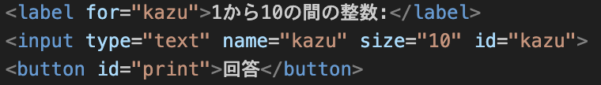

「WEBコンテンツ作成」の成果
本テーマについて
目的
このHTMLタグの学習の目的は、基本的なウェブページの構造を作成するスキルを身につけることです。
プロジェクト課題について
プロジェクト課題で作成したページ：project.html
数当てゲーム
- JavaScriptを用いて1から10までのランダムな数値を答えとし、変数yosoに対して「正解」「大きい/小さい」などのヒントをコンソールに表示します。試行回数は最大3回までで、4回目以降は「すでにゲームは終わっています」を表示します。
- 課題4-1更新:課題4-1ではで入力ボックスを作りました。また、document.querySelector()を使ってHTMLの入力値やボタンなどの要素を取得します。そして、let l = document.querySelector('button#print')の中に、入力された値を読み込み、判定、出力するなどの処理を書き込むことができます。さらに、textContent = を利用することで、htmlの内容を更新し、ユーザーの入力内容に相応する回答がボタンを押すたびに表示されるようになりました。
- 数当てゲームのページ:数当てゲームのHTMLのファイル
各授業回の学習事項
第1回 WWWとHTML
- 今回の授業でHTMLの基本的なタグを学びました。h1とh2は見出しタグで、h1が最も重要な見出し、h2がその次に重要な見出しです。ulは順序なしリストを作成し、その中にliタグを使ってリスト項目を追加します。a hrefはハイパーリンクを作成するタグで、href属性にリンク先のURLを指定します。これらのタグを使うことで、ページの基本的な構造を作成できます。
- 演習の結果:演習1-4:HTMLのさまざまな要素
第2回 CSSによるWebページの装飾
- 今回の授業でCSSのデコレーションを通じて、基本プロパティを習得しました。colorで文字色、font-familyでフォント種類、font-sizeで文字サイズを設定できるようになり、background-colorで要素の背景色を指定し、text-shadowで文字に影をつけて視覚的な階層を作れるようになりました。これらの基礎プロパティを組み合わせることで、シンプルなページの装飾ができました。
- 演習の結果:演習2-3:ウェブブラウザ説明ページの装飾
第3回 JavaScriptの基本
- 今回の授業でJavaScriptに関するconsole.logを使ったデバッグ手法を身につけ、動的なWebページを作成できました。数当てゲームの開発を通じて関数の使い方や条件分岐も実践的に理解しました
- 演習の結果:演習3-6: オブジェクトの参照
第4回 DOMとJavaScript
- 今回の授業でinput要素を操作し、イベントハンドラを登録する方法を学びました。これらの基礎技術を習得することで、動的なフォーム操作やインタラクティブなWebページの開発ができました。ユーザー入力に応じた即時処理やバリデーション機能の実装に役立つ知識を得ることができました。
- 演習の結果:演習4-10:足し算ページ
第5回 イベント処理